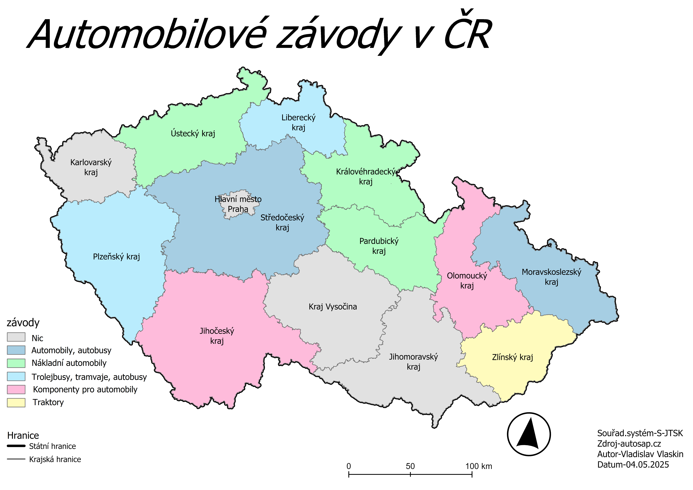
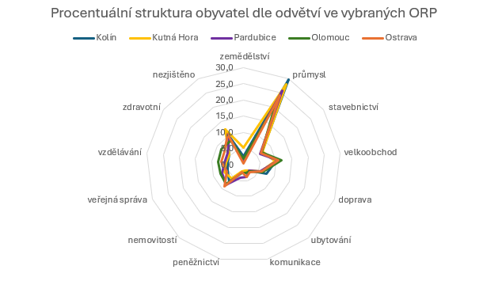

Průmysl v České Republice
Průmysl České Republiky
Průmysl České Republiky je klíčovou součástí národního hospodářství a je charakterizován silnou orientací na automobilový průmysl, strojírenství a další zpracovatelský průmysl, jako je chemický, hutnický a elektrotechnický. Tvoří významný podíl na HDP a zaměstnává zhruba 40 % ekonomicky aktivního obyvatelstva. V současnosti se potýká s výzvami spojenými s mezinárodní poptávkou, inflací a vyššími cenami energií, nicméně automobilový průmysl zůstává dominantním odvětvím z hlediska tržeb i zaměstnanosti.
Automobilový průmysl v České Republice
Automobilový průmysl je jedním z nejdůležitějších sektorů české ekonomiky. Česká Republika patří k největším výrobcům automobilů v Evropě v přepočtu na obyvatele a v oboru pracují desítky tisíc lidí. Kromě výroby osobních aut zahrnuje i produkci autobusů, nákladních vozidel, traktorů a široké škály komponentů. Mapa ukazuje rozmístění automobilových závodů v jednotlivých krajích. Výroba je soustředěna hlavně ve Středočeském, Plzeňském, Moravskoslezském a Zlínském kraji, zatímco jiné regiony mají jen malou nebo žádnou přítomnost automobilového sektoru. Rozložení odráží historický vývoj, průmyslovou tradici i ekonomickou specializaci krajů.

Čím se „baví“ lidé v Česku?
Pavoukový graf ukazuje, že lidé v Česku pracují hlavně v průmyslu, stavebnictví, dopravě a obchodě – tedy v tradičních odvětvích, která drží ekonomiku v chodu. Každé město má ale trochu jiný charakter: Ostrava je stále průmyslová, zatímco Pardubice nebo Olomouc mají větší podíl vzdělávání a veřejné správy. Struktura zaměstnanosti tak odhaluje, jak rozdílné jsou regiony a jak se města přizpůsobují moderním profesím.
